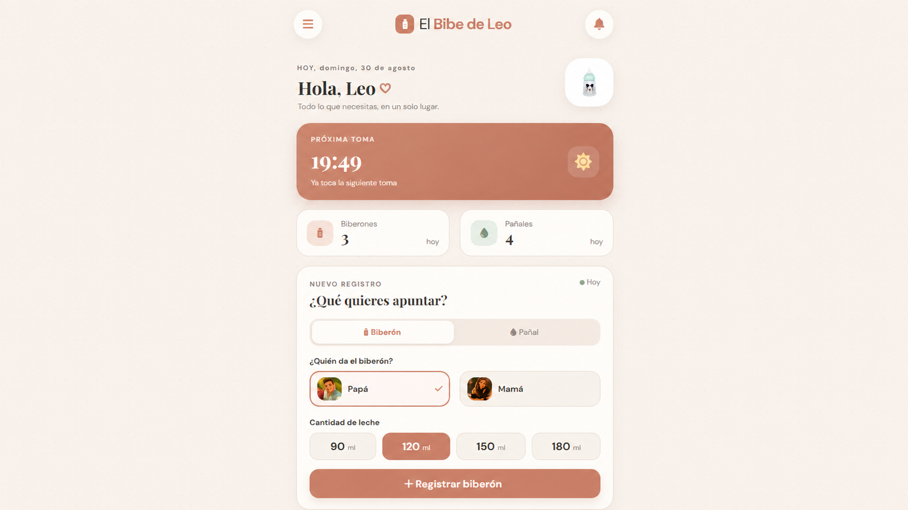

Para tu bebé, en equipo
El bibe de Leo
¿Eres primeriz@ y necesitas ayuda con los bibes y los pañales? Guarda las tomas y los cambios del bebé y consulta el historial con tu pareja.
- Registro de biberones y cambios de pañal
- Historial para consultar cómo ha ido el día
- Sincronización entre vuestros móviles
Disponible para móviles Android. Este archivo no se puede instalar en iPhone.
Cómo instalarla
- Pulsa «Descargar para Android» y abre el archivo descargado.
- Si el móvil te lo pide, permite la instalación desde el navegador que estás usando y pulsa «Instalar».
- Abre «El bibe de Leo» y crea tu cuenta. Para compartir el historial, iniciad sesión con la misma cuenta en los dos móviles.